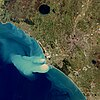

sediment
matter

Source: Wikipedia
Wikipedia Page (Something wrong with this association? Let us know.)
Wikidata Page (Something wrong with this association? Let us know.)
Occurs in:
- channel_bottom_sediment_grain_water__hydraulic_conductivity
- atmosphere_air_sediment~suspended_flowing__mass_concentration
- atmosphere_air_sediment~suspended_flowing__volume_concentration
- drainage-basin_outlet_sediment__yield
- drainage-basin_outlet_water_sediment~bedload_flowing__mass_rate
- drainage-basin_outlet_water_sediment~bedload_flowing__volume_rate
- drainage-basin_outlet_water_sediment~suspended_flowing__mass_rate
- drainage-basin_outlet_water_sediment~suspended_flowing__volume_rate
- drainage-basin_outlet_water_sediment_flowing__mass_rate
- drainage-basin_outlet_water_sediment_flowing__volume_rate
- drainage-basin_outlet_water_sediment~washload_flowing__mass_rate
- drainage-basin_outlet_water_sediment~washload_flowing__volume_rate
- river-bank_sediment~saturated_water__hydraulic_conductivity
- channel_bottom_sediment__thickness
- channel_bottom_sediment_grain__d50_diameter
- channel_bottom_sediment_grain__d84_diameter
- channel_bottom_sediment_oxygen~dissolved_consumption__mass-per-time_rate
- channel_bottom_sediment~saturated_water__hydraulic_conductivity
- channel_bottom_water_sediment_flowing__shields_parameter
- channel_bottom_water_sediment_grain_flowing__shields_critical_shear_stress
- channel_bottom_water_sediment_grain_flowing__shields_parameter
- channel_exit_water_sediment~suspended_flowing_x-section__mass_rate
- channel_water_sediment_grain_settling__stokes_terminal_speed
- channel_water_sediment~bedload__mass-per-volume_density
- channel_water_sediment~bedload_flowing__mass_rate
- channel_water_sediment~bedload_flowing__volume_rate
- channel_water_sediment~bedload~immersed_grain__weight
- channel_water_sediment~suspended__mass_concentration
- channel_water_sediment~suspended_flowing__mass_rate
- channel_water_sediment~suspended__rouse_number
- channel_water_sediment~suspended_flowing__volume_rate
- channel_water_sediment~suspended_flowing__volume-flow-rate-law_area_exponent
- channel_water_sediment_flowing__volume_rate
- channel_water_sediment_flowing__volume-flow-rate-law_area_exponent
- channel_water_sediment_flowing__volume-flow-rate-law_coefficient
- channel_water_sediment_flowing__volume-flow-rate-law_slope_exponent
- channel_water_sediment~washload__mass_concentration
- channel_water_sediment~washload_flowing__mass_rate
- channel_water_sediment~washload_flowing__volume_rate
- river-delta_bottomset-beds_sediment_clay__volume_fraction
- river-delta_bottomset-beds_sediment_sand__volume_fraction
- river-delta_bottomset-beds_sediment_silt__volume_fraction
- river-delta_foreset-beds_sediment_clay__volume_fraction
- river-delta_foreset-beds_sediment_sand__volume_fraction
- river-delta_foreset-beds_sediment_silt__volume_fraction
- river-delta_topset-beds_sediment_clay__volume_fraction
- river-delta_topset-beds_sediment_sand__volume_fraction
- river-delta_topset-beds_sediment_silt__volume_fraction
- river-delta_topset-beds~lower_sediment_silt__volume_fraction
- river-delta_topset-beds~upper_sediment_silt__volume_fraction
- river-delta_channel~main_entrance_water_sediment_clay__volume_fraction
- river-delta_channel~main_entrance_water_sediment_sand__volume_fraction
- river-delta_channel~main_entrance_water_sediment_sand_grain__mean_of_diameter
- river-delta_channel~main_entrance_water_sediment_silt__volume_fraction
- river-delta_channel~main_entrance_water_sediment~suspended__mass_concentration
- river-delta_channel~main_entrance_water_sediment~suspended_flowing__mass_rate
- river-delta_channel~main_entrance_water_sediment~suspended_transport__mass_rate
- river-delta_channel~main_entrance_water_sediment~suspended__volume_concentration
- river-delta_front_sediment__repose_angle
- river-delta_front_sediment_grain__mean_of_diameter
- river-delta_shoreline_sediment_reworking_ocean_water_wave__depth
- sea_bottom_sediment_deposition__age
- sea_bottom_sediment~immersed__weight
- sea_bottom_sediment_bulk__mass-per-volume_density
- sea_bottom_sediment__mass-per-volume_density
- sea_bottom_sediment_particle__mass-per-volume_density
- sea_bottom_sediment__fluid_permeability
- sea_bottom_sediment__porosity
- sea_bottom_sediment__thickness
- sea_bottom_sediment__thickness-to-depth_ratio
- sea_bottom_sediment_clay__volume_fraction
- sea_bottom_sediment_grain__mean_of_diameter
- sea_bottom_sediment_layer__thickness
- sea_bottom_sediment_mud__volume_fraction
- sea_bottom_sediment_sand__volume_fraction
- sea_bottom_sediment_silt__volume_fraction
- sea_water_sediment~suspended__mass_concentration
- sea_water_sediment~suspended__volume_concentration